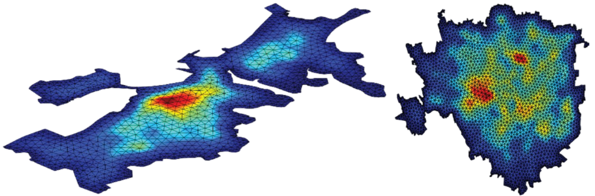
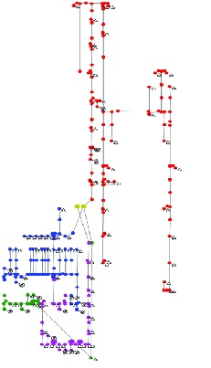
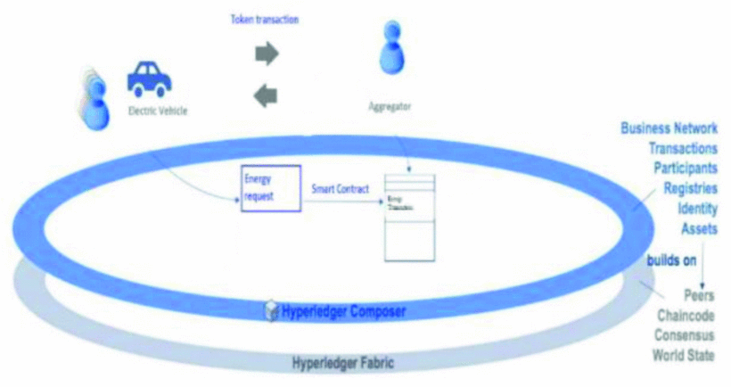

Hi, I am Soheil
Electrical Engineer with a PhD specializing in power systems and smart grid technologies. Passionate about fitness and exploring the mysteries of life and the universe.
Electrical Engineer with a PhD specializing in power systems and smart grid technologies. Passionate about fitness and exploring the mysteries of life and the universe.
This paper provides original insights into the interpretation and application of the allocated losses in radial distribution systems. New analytical formulations of the sensitivity of the total losses with respect to the node current magnitude are provided, starting from the power flow solution for balanced and unbalanced radial distribution networks. The results are discussed showing solutions obtained on balanced and unbalanced radial distribution systems with time-varying loads and local generations, even in reverse power flow conditions.

This paper proposes a framework of analysis to determine the mitigation of the PV energy curtailment in the grid, based on a novel smart charging strategy for electric vehicles (EVs) that operate in the grid-to-vehicle mode. This framework adopts a combination of methods and techniques.The proposed framework contains novel Monte carlo indicators of avoided PV power reduction and energy curtailment.

In this paper, a new method is proposed to charge EVs based on fuzzy logic and distributed ledger using a proof of stake algorithm. In this way, the risk of manipulation and loss of data, which could be detrimental to the energy sector, is reduced. The decentralisation of controlling EV's charging is achieved using this technique and the data floating inside the network is immutable and protected by the consensus mechanism of blockchain.
In this paper, a new method to locate EV's charging infrastructures, based on the parallelism between mobility needs and heat equation implemented with Finite Element Method analysis (FEM), is proposed. The method is applied for two cities with similar metropolitan area: Boston (USA) and Milan (Italy), with further results. Although FEM is a mathematical tool for solving physical problems, the behavior of different parameters in this paper is modeled as physical objects.
The allocation of the losses that occur during the operation of the distribution system to the distribution network nodes is useful to understand whether there could be a deficit or an excess of load or local generation in the nodes. This concept is extended in this paper by looking at the zones of the distribution network in which there is an interaction among the generations and loads. The sign of the allocated losses is considered as a useful indicator of the need to provide more load or more local generation in the zone. Specific findings are extracted from the analysis of balanced and unbalanced distribution systems with time-varying load and distributed generation.
This paper focuses on the development of the Islanding Control tool within the Smart Grid Controller (SGC) application, presenting a control scheme for robust management and control of split grids. The islanding trigger entails specific instructions from the mainland system operator, deliberate disconnection maneuvers, and handling cascading failures in response to potential risks. This paper demonstrates the effectiveness of the developed Islanding Control tool, which was evaluated on an actual Electrical Distribution System (EDS).
In this paper, we have proposed a new method of EV's charging based on the blockchain technology and fuzzy logic. Applying this method offers the compensation of peak loads and is a fast and efficient way of charging electric vehicles. It also guarantees the security and the privacy of members (EV's) due to the consensus inheritance of Blockchain.
With this paper, the key aspects of an EVs market have been considered, from a technical, economic and political point of view, which are the basis of adequate knowledge for decision-makers.
Corso Duca degli Abruzzi, 24, 10129 Torino TO
039-3452321389
soheil.saadatmandi@polito.it